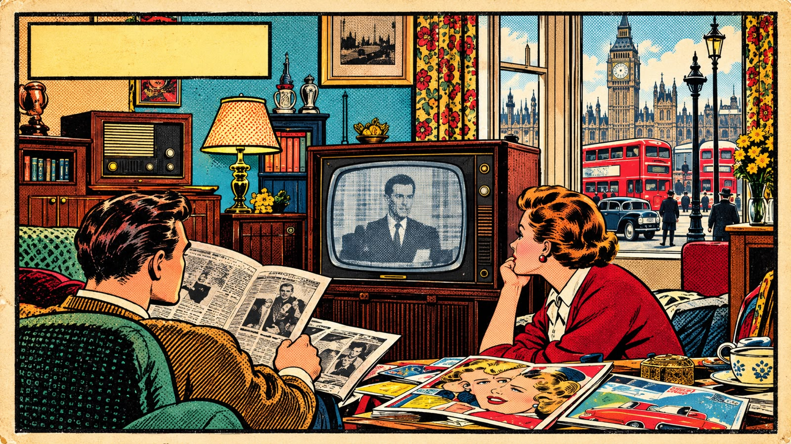
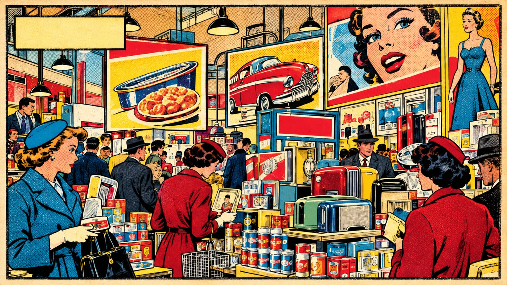
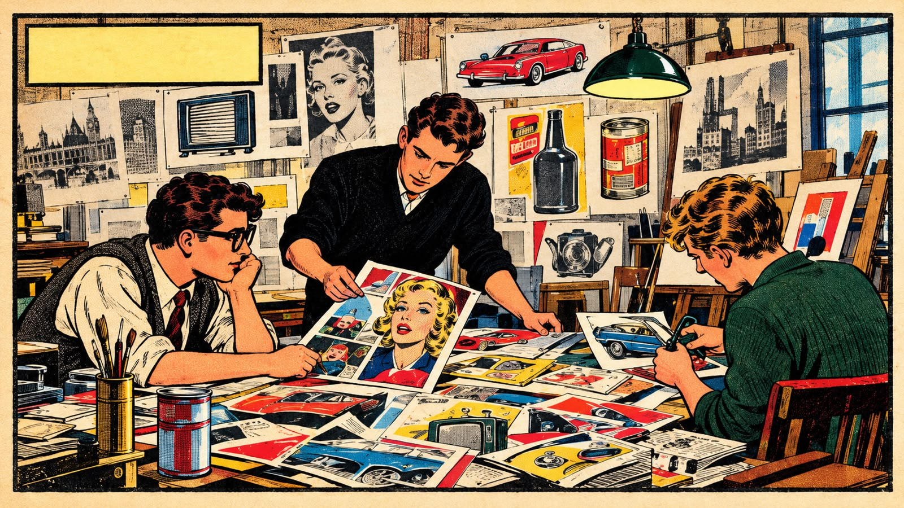
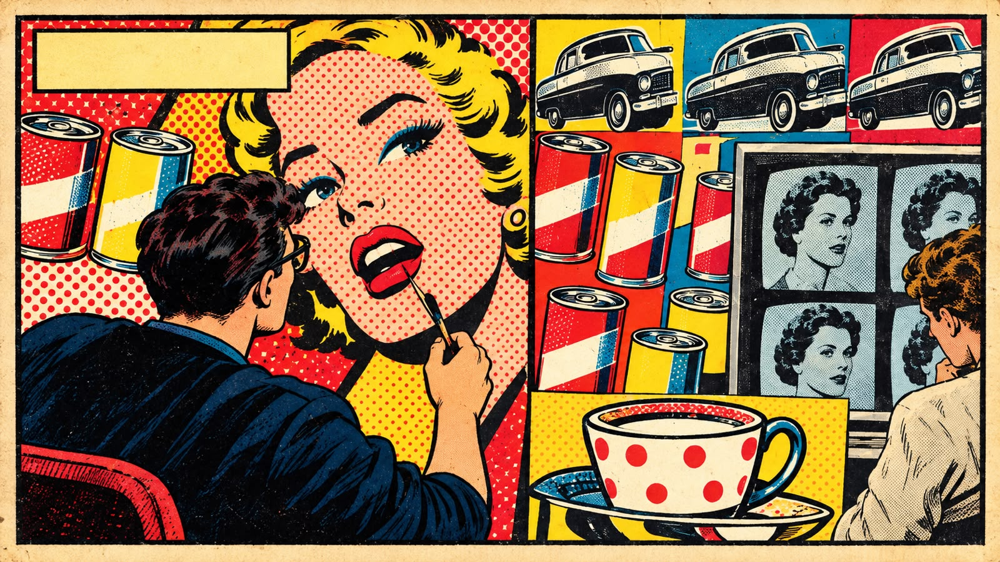
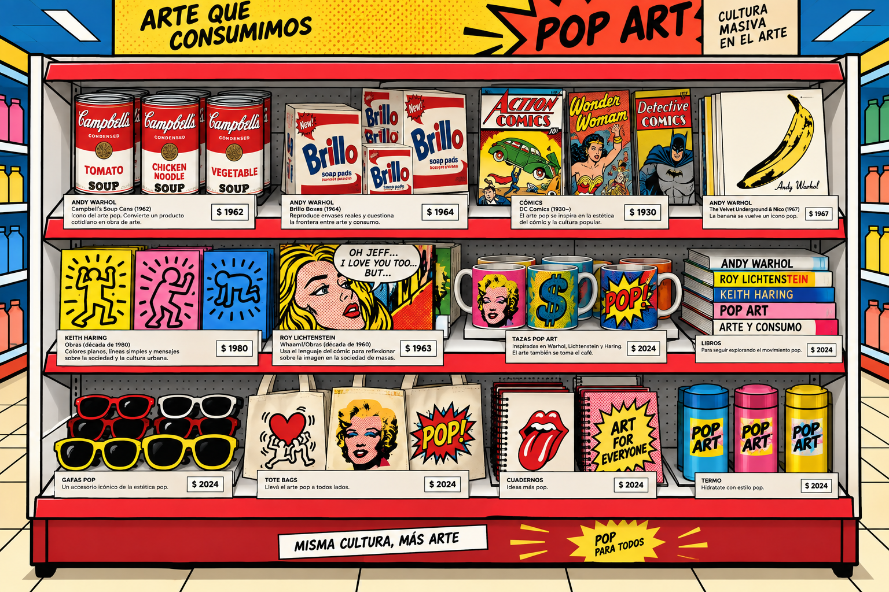

Antes de convertirse en colores intensos, cómics y objetos repetidos, el Pop Art nació de una pregunta: ¿por qué el arte debía mantenerse separado de aquello que las personas veían y consumían todos los días?

UNA NUEVA CULTURA ENTRA EN CASA.
UNA NUEVA CULTURA
“A mediados de los años 50, la televisión, las revistas, el cine y la publicidad empezaron a ocupar un lugar cada vez mayor en la vida cotidiana británica. La cultura popular estaba cambiando rápidamente y una nueva generación de artistas comenzó a prestarle atención.”

EL CONSUMO CAMBIA EL PAISAJE.
TODO SE CONVIERTE EN PRODUCTO
“El crecimiento del consumo llenó las ciudades de anuncios, envases, electrodomésticos y nuevos productos. Estas imágenes comerciales dejaron de ser simplemente publicidad: empezaron a formar parte del imaginario colectivo.”

LOS ARTISTAS EMPIEZAN A MIRAR.
¿Y SI ESTO TAMBIÉN ES ARTE?
“Algunos artistas comenzaron a mirar ese universo cotidiano de otra manera. Revistas, cómics, fotografías, productos y anuncios se convirtieron en materiales con los que podían experimentar y construir nuevas imágenes.”

LO COTIDIANO SE CONVIERTE EN ARTE.
NACE UNA NUEVA MIRADA
“La cultura de masas entró definitivamente en el lenguaje artístico. Colores intensos, repetición, publicidad, celebridades y objetos cotidianos comenzaron a mezclarse con el arte. Esa nueva mirada sentó las bases de lo que pronto sería conocido como Pop Art.”
LOS ARTISTAS
Cinco miradas. Cinco formas de convertir lo cotidiano en un ícono.
CONSUME!
EL SUPERMERCADO POP
Elegí un objeto y descubrí qué lo convirtió en arte.

¿ARTE O PUBLICIDAD?
Ponete a prueba tu mirada: elegí una categoría y descubrí si el límite es tan claro.